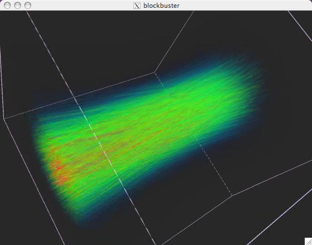

At Lawrence Livermore Laboratory and more and more places, very large displays are being used in theatres for scientific visualization. These displays contain thousands of pixels in both X and Y, which is several million pixels. To utilize these displays, very large movies are created. These very large movies, greater than about 1 million pixels, may play back unevenly due to the inability to move them off disk fast enough to render at the optimal frame rate, usually 30 fps.
Blockbuster is an image/movie viewer/player especially designed to solve this problem for very large images and movies (high resolution and many frames) on cluster displays running the DMX X server. It also displays on ordinary linux or Macintosh machines. Blockbuster reads ordinary image files, but for large movies, you are going to want to create movies using the "streaming movie" format, which usually has the file extension ".sm" associated with it. The movie will be replicated on a separate disk, attached to each backend node driving a DMX or "powerwall" display. Blockbuster launches a separate process on each backend node and reads only the portion needed to display that piece for each node, thus enabling scalable frame sizes.
For example, suppose you have a DMX display cluster constructed from a 4 by 3 array of 1280 x 1024 screens for a total of 5120 x 3072 pixels. Next, suppose you have a scientific visualization movie which is 4000 by 3000 pixels and 10,000 frames in length (i.e. a movie far too large to fit in main memory). If you copy the movie around to each node of the cluster, so that the nodes do not contend for disk access for the movie, then Blockbuster will let you play this movie efficiently on your display cluster using DMX technology.
Blockbuster has standard movie playback features such as play, pause, single step, etc. Furthermore, Blockbuster supports interactive panning and zooming with the mouse for inspecting image details.
Blockbuster has no audio support and there is no current plan to include it.
The Blockbuster project is hosted on SourceForge. For outstanding bugs, as always, please look at https://sourceforge.net/projects/blockbuster/. To report blockbuster bugs, you can go to the sourceforge website or send email to rcook@llnl.gov.
Why is it called Blockbuster? This program is meant for playing big movies (get it?). Also, in DMX playback mode images are effectively broken into chunks or blocks for efficient display. Finally, a blockbuster is a type of bomb, and the movies made initially for blockbuster had quite a bit to do with bombs.
So-called "smtools", which are utilities for creating and manipulating streaming movies, are provided with blockbuster. The streaming movie format is described in detail in the sm (4) manpage. Also included with blockbuster is Sidecar, a helper application that allows you to launch and fully control an instance of blockbuster from a remote machine, and which allows you to create a predetermined set of "movie cues" that can be saved and executed for a rehearsed presentation.
Blockbuster has the following major features:
Blockbuster is invoked as follows:
blockbuster -flags [-- -rendererFlags...] matchFilename...
Possible flags are listed below. The rendererFlags can change the behavior of the renderer that is being used to render each frame of the image; because each renderer has different behaviors, each has its own set of flags.
The matchFilename parameters may be either partial file names or complete file names. All matchFilename parameters expand to match all files that begin with the given characters. For example, given a directory samples that contains the image files image1.tiff,image2.png, and picture.tiff, behavior is as follows:
|
|
The single image file |
|
|
The |
|
|
The |
|
Flag |
Default Value |
Effect |
|---|---|---|
| -backend-path path | abspath($0) | specifies the path to blockbuster on the backend nodes for DMX (default is to use the same path as the front end) |
| -BackendPath path | same as front end | same as -backend-path <path> |
|
-cache num |
8 |
Specify how many frames to cache – use lower values when frame size gets large |
|
|
$DISPLAY |
Specify the X display name (such as "foobar:0") |
|
|
"fixed" |
Specify the name of the font to use in the rendering window for displaying the current frame, zoom, etc. information. Default is "fixed". Use xlsfonts to list the fonts available on your system. |
| -framerate (or -F) rate | 30.0 | Limit the movie to rate frames per second or less. |
|
|
fit to size of movie |
Specify the window geometry for the X window. Examples: "+500+200" to set the position, "600x400" to set the size or "600x400+500+200" to set both the size and position. |
|
|
n/a |
A usage summary will be provided. All available flags will be displayed, as will all supported file formats, all supported renderers, and any additional options supported by each renderer. The default value for any particular flag (if any) will be displayed in square brackets (e.g., "[value]"). |
| -loops | 1 | How many times to play the movie. If you specify "forever" or -1, it will loop infinitely many times. |
|
|
"error" ("debug" if compiled with DEBUG) |
Change the verbosity of the program by changing the message level. The supported message levels are, in order of chattiness: quiet, syserr, error, warning, info, debug. |
| -no-controls (or -C) | show controls | Hides the blockbuster controller interface. Especially useful when using Sidecar. The GUI can also be hidden or displayed by right-clicking on the movie canvas. |
|
-no-decorations (or -D) |
show decorations |
Turns off window decorations |
|
|
show splash screen |
Suppress the startup splash screen. |
| -play (or -Play) | do not play on load | Play the movie immediately after loading it. |
|
-preload numframes |
4 |
Specifies how many frames to preload -- use lower values when frame size gets large |
|
|
gl or gltexture if supported |
Change the method used to render images. The supported renderers (and their options) can be discovered by using the |
|
|
disabled by default |
In DMX configurations, the back-end instances (one per screen) will be started with the -s option. This specifies that blockbuster is to operate in slave mode and that the master instance of the player is running on the computer named and can be contacted on port port. The default port is 7011. This option is only needed when running DMX in manual mode. This is rarely needed except for debugging (see "Running Manually on DMX" below). |
|
|
2 (or 1 if you do not have 2 processors) |
Change the number of threads used to preload images in the background. The default value depends on the number of processors available in your system; if your system has more than one processor, 2 threads will (by default) be used to preload images. If your system has only one processor, no threads will be used by default to preload images (i.e., all images will be loaded by the main thread). |
|
|
gtk |
Specifies the user interface. Two are supported: gtk - a GTK-based GUI, and x11 a keypress/mouse-only interface. The GTK interface is the default. |
| -version | off | If given, blockbuster prints the version and exits. (version is printed anyway on startup) |
| -zoom scale | auto | Value of 0 or "auto" means set zoom to match window size (image gets bigger if window grows). A nonzero number means keep the movie at a constant size regardless of window size. 1.0 means keep image at 100%, 1.5 means scale to 150%, etc. |
By default, Blockbuster uses a GTK-based GUI (this may be overridden with the -u command line option). This GUI is shown in the image below.

Figure 1: The movie window for blockbuster on OS X.
Figure 2: The blockbuster movie control interface.
The blockbuster interface contains the following elements:
Playback controls - there are buttons for playing, stopping and stepping in various increments. If the scrub checkbox is checked, the current frame slider can be dragged to scrub over the movie.
Framerate (FPS) control - controls the frame rate. Blockbuster will play back the movie as quickly as possible, but no faster than the current framerate setting.
Detail - for files that have multiple levels of detail, this control selects between them. It's actually a bias added to the automatically computed level of detail (computed from current zoom factor). 0 is the highest level of detail, 1 is half detail, 2 is quarter detail, etc.
Open - allows you to select a new file through the file browser.
Center - center the image in the window
100% -- zoome to 100%
Fit -- fit the image in the current window
Fill -- resize the window to fit the display
Info -- show movie properties
Hide - hides the GUI panel. GUI visibility is also toggled on and off by pressing 'i' or right-clicking on the movie image.
Whether or not Blockbuster is used with a GUI, it can be controlled with the mouse and keyboard.
The mouse is used to do the following:
Panning - press the left mouse button and drag the mouse to pan over the image.
Zooming - press the middle mouse button and drag forward/backward to zoom in/out of the image.
The following keyboard commands are recognized:
Right/Left arrow - advance/backup by one frame.
Shift + Right/Left arrow - advance/backup by 20 frames.
Control + Right/Left arrow - advance/backup by 1/4 of movie length.
Home - jump to the first frame, center the image and set zoom to one
End - jump to the last frame in the movie
Spacebar - play/pause
r - play in reverse
f - zoom image to fit the window (minify only)
1 - set zoom to 1.0
c - center the image in the window
l/L - increase/decrease the current level of detail displayed
z/Z - zoom in or out
+/- - increase or decrease the frame rate
i - display the GUI panel (interface) if it was hidden
Esc - exit Blockbuster
This section describes how to set up and use Blockbuster on a display cluster running DMX. In this mode, you, the user, run blockbuster on the "frontend" (login) node of DMX, and blockbuster spawns a copy of itself on each "backend" DMX node. Each backend blockbuster loads only a part of the movie, making movie viewing on large powerwalls very practical at good frame rates.
Checklist / setup:
DMX should already be up and running on your display cluster.? Make sure you have a copy of DMX installed released later than July 2003.
The file to view must be accessible on all hosts using the same directory path. For example, if you wish to view the file /home/data/simulationrun1.sm on your DMX display, the path /home/data/simulationrun1.sm must exist on all nodes. The optimal way to do this is to copy the file to the local hard drive on each host. This prevents contention for the same file.
Most cluster systems have a shared filesystem which allows all hosts to access the same files using the same paths. We don't recommend using this method as it misses the point of using blockbuster entirely, which is to avoid disk access bottlenecks by running in parallel over several disks.
The BLOCKBUSTER_RSH environment variable specifies the remote shell program used for starting the back-end instances of blockbuster on the cluster. Typically, BLOCKBUSTER_RSH will be set to either rsh or ssh depending on your site's setup. You should have thing set up such that either rsh or ssh can be used without entering passwords, and such that blockbuster is in your PATH on the backend nodes. To test this, try typing "rsh which blockbuster" and if this fails or you are prompted for a password, consult your system administrator for a workaround.
Make sure that your DISPLAY environment variable is set to the DMX X server. Start an X application like xterm and make sure it appears on the DMX display.
At this point, simply start Blockbuster with the dmx renderer:
blockbuster -r dmx mymovie.sm
If you have compiled blockbuster with MPI support, then do this to enable more accurate MPI-based frame synchronization:
blockbuster -r dmx -mpi mymovie.sm
blockbuster -r dmx -R gltexture mymovie.sm
Blockbuster can be configured to work with different MPI launching schemes. If you run with -mpi, blockbuster will connect to one backend node and launch $BLOCKBUSTER_MPI_SCRIPT on that host with args given in the string $BLOCKBUSTER_MPI_SCRIPT_ARGS. Type blockbuster -help for more options.
This section describes some of the inner workings of Blockbuster.
There are currently five supported rendering paths (selected with the -r option):
x11 - Images are drawn with Xlib using XPutImage(). This path does not support bilinear filtering.
gl - Images are drawn with OpenGL's glDrawPixels() command. Image zooming is supported, but bilinear filtering is not. When zoomed out (i.e. minification), reduced-resolution images are used if the file format supports them.
gl_stereo – Same as the gl rendering path, but adds support for the SM stereo movie file; for non-stereo movies playback is every other frame
gltexture - Images are drawn with OpenGL by drawing a texture on a quadrilateral. Full bilinear/trilinear filtering is supported. When the image to draw is larger than will fit into a single OpenGL texture, tiling is used (the image is broken into pieces each rendered with a separate quadrilateral). When zoomed out (i.e. minification), mipmapped textures are used. Furthermore, if the file format supports multiple image resolutions, reduced resolution images will be read when possible.
dmx - Intended for cluster displays running the DMX X server. For each host in the cluster, a back-end instance of Blockbuster is started. The front-end instance of the player sends commands to the back-end instances which do the actual rendering directly with the back-end servers.
Since Blockbuster is designed to play images much larger than will fit into main memory, an image cache is used to store and manage a subset of the frames in main memory.
The cache can be threaded (if Blockbuster is run with the -t option, or on a multi-processor system); this allows the main Blockbuster thread to render images while the image cache threads can read and decompress upcoming images asynchronously.
Even if Blockbuster runs single-threaded, the image cache will maintain recently-loaded images, to improve interactive performance while stepping back and forth through an image or panning and zooming an image.
Some file formats, such as SM, may store images at multiple levels of detail. For example, the top-most (level 0) image may be 4K x 4K pixels. The next level of detail may be 2K x 2K pixels, and the next 1K x 1K pixels.
When an image is minified (zoom < 1.0) performance improves by reading and rendering a reduced level of detail.
Blockbuster automatically chooses the best level of detail according to the current zoom factor and target frame rate.
When running in DMX mode the front-end instance of Blockbuster doesn't actually draw anything. Instead, it sends commands (via unix sockets) to the back-end instances of Blockbuster. The back-end instances can use either the x11, gl or gltexture renderers to render directly with the back-end servers, selected via the -R flag. There are no large image transfers going through DMX. This improves performance.